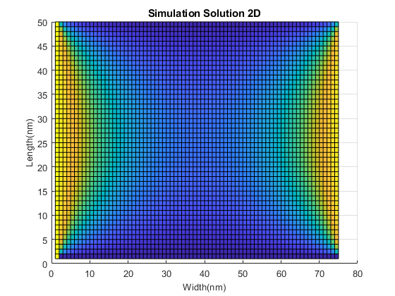
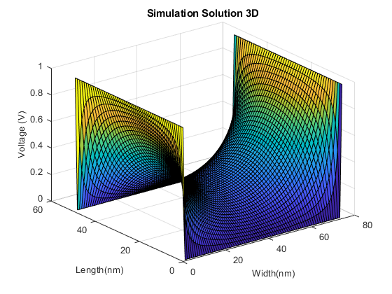
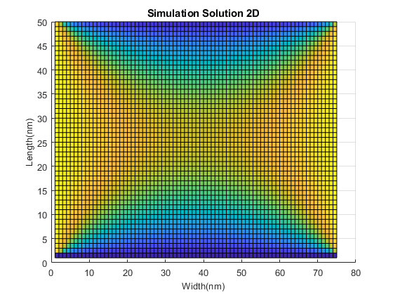
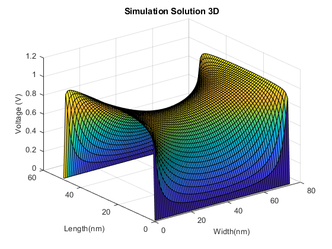
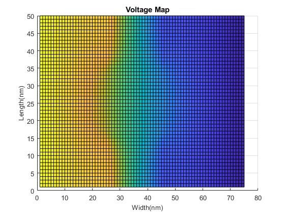
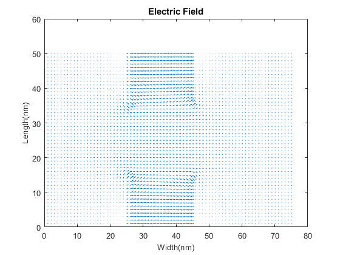

ELEC 4700 Assignment 2
Finite Difference Method - Jinseng Vanderkloot 101031534 - Due: March 1, 2022
Contents
- Part 1A: Define the area and see what happens when left side is 1V and right side is 0V while top and bottom isolate.
- Part 1B: Both left and right have 1V and sides and top and bottom are 0V, get the finite difference solution and compare the mathmatical solution for the shape.
- Analytical Solution
- Part 2 - made a function to easily change the parameters of the area.
- A2_2A - Get Current Flow through area and use function.
- A2_2B - Change Mesh Density
- A2_2C - Narrow the Bottleneck
- A2_2D - Varrying conductivity in the box
Part 1A: Define the area and see what happens when left side is 1V and right side is 0V while top and bottom isolate.
nx = 75; % # of colums ny = 50; % # of rows G = sparse(nx*ny,ny*nx); F = zeros(nx*ny,1); for i = 1:nx for j = 1:ny n = j + (i-1) * ny; % middle nxm = j + (i-2) * ny; % right nxp = j + i * ny; % left nym = j-1 + (i-1) * ny; % top nyp = j+1 + (i-1) * ny; % down if i == 1 %Left Boundary V=Vo G(n,n) = 1; F(n,1) = 1; elseif i == nx %Right Boundary V=0 G(n,n) = 1; elseif j == 1 %Bottom G(n,n) = -3; G(n,nxm) = 1; G(n,nxp) = 1; G(n,nyp) = 1; elseif j == ny %Top G(n,n) = -3; G(n,nxm) = 1; G(n,nxp) = 1; G(n,nym) = 1; else %Middle G(n,n) = -4; G(n,nxm) = 1; G(n,nxp) = 1; G(n,nym) = 1; G(n,nyp) = 1; end end end V = G\F; Vmap = reshape(V, [ny, nx]); % Reshaping Vector to a matrix figure('name', 'Solution 1A'), title('Simulation Solution'), surf(Vmap'), view(90,0);
Part 1B: Both left and right have 1V and sides and top and bottom are 0V, get the finite difference solution and compare the mathmatical solution for the shape.
nx = 75; % # of colums ny = 50; % # of rows G = sparse(nx*ny,ny*nx); F = zeros(nx*ny,1); for i = 1:nx for j = 1:ny n = j + (i-1) * ny; % middle nxm = j + (i-2) * ny; % right nxp = j + i * ny; % left nym = j-1 + (i-1) * ny; % top nyp = j+1 + (i-1) * ny; % down if i == 1 %Left Boundary V=Vo G(n,n) = 1; F(n,1) = 1; elseif i == nx %Right Boundary V=Vo G(n,n) = 1; F(n,1) = 1; elseif j == 1 %Bottom Boundary V=0 G(n,n) = 1; F(n,1) = 0; elseif j == ny %Top Boundary V=0 G(n,n) = 1; F(n,1) = 0; else %Middle G(n,n) = -4; G(n,nxm) = 1; G(n,nxp) = 1; G(n,nym) = 1; G(n,nyp) = 1; end end end V = G\F; Vmap = reshape(V, [ny, nx]); % Reshaping Vector to a matrix figure('name', 'Solution 1B'), surf(Vmap), view(0,90);
Analytical Solution
a = nx; b = ny/2; x = linspace(-b, b, nx); % needs to be +b and -b for both sides of surface y = linspace(0, a, ny); V2 = zeros(ny, nx); figure('name', 'Equation Solution') [X,Y] = meshgrid(x,y); for n = 1:2:99 %1,3,5,7...99 V2 = V2 + ( (1/n) * (cosh((n*pi*X)/a)/cosh((n*pi*b)/a)).* sin((n*pi*Y)/a) ); surf(4/pi*V2), title('Equation Solution'), view(0,90); pause(0.01); end % The simulated solution matches closely the analytical solution, the analytical solution wont complete at the corners becuase it is infinite and hard to solve.
Part 2 - made a function to easily change the parameters of the area.
%Make this into a function like in the intro to the lab which inputs size; % of area, size of boxes (placed into the middle x and bottom and top).; % and box conduction values; %function [V] = A2_Function(nx, ny, xBox, yBox,boxCond,x0,x1); %Inputs:; %Area x dimension, Area y dimension, box x dimension in middle of area,; %Box y dimension from bottom to high and from top down, box conductivity,; %x0 = volatge at left side, x1 = volatge at right side.; % % global Carea %NEEDS TO BE GLOBAL - a lot of issues when not global; % % % Add bottleneck; % Carea = ones(nx,ny); %set conduction area to 1; % % In area, place boxes with new conduction (faster than for loop) ; % Carea(nx/2 - xBox/2:nx/2 + yBox/2,1:yBox) = boxCond; %Bottom Box; % Carea(nx/2 - xBox/2:nx/2 + yBox/2,ny-yBox:ny) = boxCond; %Top Box; % % G = sparse(nx*ny,ny*nx); % F = zeros(nx*ny,1); % % for i = 1:nx; % for j = 1:ny; % n = j + (i-1) * ny; % middle; % nxm = j + (i-2) * ny; % right; % nxp = j + i * ny; % left; % nym = j-1 + (i-1) * ny; % top; % nyp = j+1 + (i-1) * ny; % down; % if i == 1 %Left Boundary V=Vo % G(n,n) = 1; % F(n,1) = x0; % elseif i == nx %Right Boundary V=Vo % G(n,n) = 1; % F(n,1) = x1; % elseif j == 1 %Bottom Boundary (Free) % bxm = (Carea(i,j) + Carea(i-1,j)) / 2; % bxp = (Carea(i,j) + Carea(i+1,j)) / 2; % byp = (Carea(i,j) + Carea(i,j+1)) / 2; % % G(n,n) = -(bxm + bxp + byp); % G(n,nxm) = bxm; % G(n,nxp) = bxp; % G(n,nyp) = byp; % elseif j == ny %Top Boundary (Free) % bxm = (Carea(i,j) + Carea(i-1,j)) / 2; % bxp = (Carea(i,j) + Carea(i+1,j)) / 2; % bym = (Carea(i,j) + Carea(i,j-1)) / 2; % % G(n,n) = -(bxm + bxp + bym); % G(n,nxm) = bxm; % G(n,nxp) = bxp; % G(n,nym) = bym; % else %Middle % bxm = (Carea(i,j) + Carea(i-1,j)) / 2; % bxp = (Carea(i,j) + Carea(i+1,j)) / 2; % byp = (Carea(i,j) + Carea(i,j+1)) / 2; % bym = (Carea(i,j) + Carea(i,j-1)) / 2; % % G(n,n) = -(bxm + bxp + bym + byp); % G(n,nxm) = bxm; % G(n,nxp) = bxp; % G(n,nym) = bym; % G(n,nyp) = byp; % end % end % end % V = G\F; % end
A2_2A - Get Current Flow through area and use function.
nx = 75; % # of colums ny = 50; % # of rows xBox = 25; %Width of box yBox = 15; %Hight of box boxCond = 0.01; x0 = 1; %voltage at right side of area x1 = 0; %Voltage at left side of area global Carea %Must declare global for both in and out of function V=A2_Function(nx, ny, xBox, yBox, boxCond, x0, x1); Vmap = reshape(V, [ny, nx]); % Reshaping Vector to a matrix figure('name', 'Voltage Solution') surf(Vmap),title('Voltage Map'),view(2); % Conductivity Map figure('name', 'Conductivity Map'); surf(Carea), title('Conductivity Map'); % Electric Field [Ex,Ey] = gradient(-Vmap); figure('name', 'Electric Field'); quiver(Ex,Ey), title('Electric Field'); % Current Flow Jx = Carea'.* Ex; Jy = Carea'.* Ey; figure('name', 'Current Flow'); quiver(Jx,Jy), title('Current Flow'); %When size of area increases, there is more space for current to flow %therefor the current density if less.   
A2_2B - Change Mesh Density
warning ('off') mesh = 1:1:5; %increase mesh 5 times in steps of 1 and see effect x0 = 1; %voltage at right side of area x1 = 0; %Voltage at left side of area cur = zeros(size(mesh,2),1); global Carea %Must declare global for both in and out of function for a = 1:size(mesh,2) %Size of area and box changes to increase mesh nx = 75*a; % # of colums ny = 50*a; % # of rows xBox = 25*a; %Width of box yBox = 15*a; %Length of box V=A2_Function(nx, ny, xBox, yBox, a, x0, x1); Vmap = reshape(V, [ny, nx]); J = Carea'.*gradient(-Vmap); cur(a,1) = max(J,[],"all"); end figure('name', 'Max Current vs Mesh size'); plot(mesh,cur, 'r'); xlabel('Mesh size'); ylabel('Maximum Current Density (A/m^2)'); title('Max Current vs Mesh size');
A2_2C - Narrow the Bottleneck
nx = 75; % # of colums ny = 50; % # of rows xBox = 25; %Width of box yBox = 1:1:25; %Length of box boxCond = 0.01; x0 = 1; %voltage at right side of area x1 = 0; %Voltage at left side of area cur = zeros(25,1); global Carea %Must declare global for both in and out of function for a = 1:25 V=A2_Function(nx, ny, xBox, a, boxCond, x0, x1); Vmap = reshape(V, [ny, nx]); J = Carea'.*gradient(-Vmap); cur(a,1) = max(J,[],"all"); end figure('name', 'Max Current vs bottle-neck'); plot(yBox,cur, 'r'); xlabel('Height of Box (m)'); ylabel('Maximum Current Density (A/m^2)'); title('Max Current vs bottle-neck'); %Current Density increases as the current squeezes though a smaller area %until it is completely cut off.
A2_2D - Varrying conductivity in the box
nx = 75; % # of colums ny = 50; % # of rows xBox = 25; %Width of box yBox = 15; %Length of box boxCond = logspace(0.0001,100); %increase in increments of x10 x0 = 1; %voltage at right side of area x1 = 0; %Voltage at left side of area cur = zeros(size(boxCond,2),1); global Carea %Must declare global for both in and out of function for a = 1:size(boxCond,2) V=A2_Function(nx, ny, xBox, yBox, a, x0, x1); Vmap = reshape(V, [ny, nx]); J = Carea'.*gradient(-Vmap); cur(a,1) = max(J,[],"all"); end figure('name', 'Max Current vs Box Conductivity'); plot(boxCond,cur, 'r'); set(gca, 'XScale', 'log'); xlabel('Box Conductivity (S/m)'); ylabel('Maximum Current Density (A/m^2)'); title('Max Current vs Box Conductivity'); %When increasing the conductivity of the boxes, more current will flow %through them reducing the maximum current density